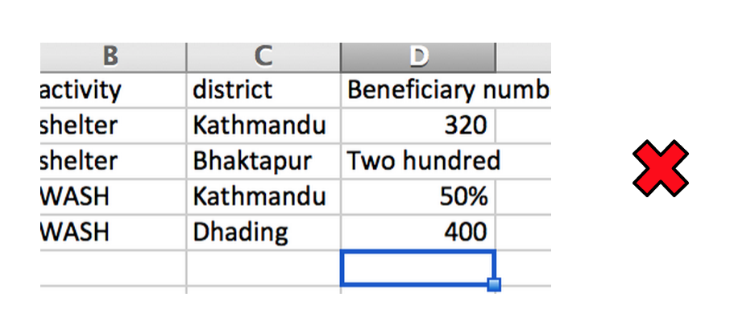

Humanitarian Information Management 101
Structuring Data
Press right on your keyboard or swipe right to navigate
Click below to jump to a section
Spreadsheets offer an infinite way of arranging and keeping track of data. However, some forms are easier for you and others to work with. You’ll be introduced to what well formed data is and the difference between wide and narrow data and the consequences of choosing different forms.
The guidelines here should not be considered hard and fast rules, but rather general guidance. The context of use can sometime require different and unique approaches.
Click the arrows icons or press right and left arrow key to navigate.
Reporting Structure
Many times when in the field it can be tempting to structure the data in the format it is reported in as this can save time. Often this format would not count as well formed data. The drawback is that the data is then structured in a way that is only useful for that one use case.
An example of data that is not well formed.
If you find out you have another use case for the data it can be a lot of work to transform the data into the form you need. By starting with well formed data you can save yourself and others a lot of work and time. Spreadsheets also provide many tools such as pivot tables for taking well formed data and transforming to the form you need for reporting.
A second example of data that is not well formed.
Well formed data is easy to transform into many forms useful for reporting.
Well Formed Data
What is well formed data?
Well formed data has the following characteristics:
- Only one table per sheet
- Only one data type per column
- Only one value per cell
- Repeat Values, do not merge cells
- Does not contain totals and subtotals
- All rows are the same length
Only one table per sheet
On the left the data is incorrectly laid out with multiple tables per sheet. On the right is the same data in a well formed structure.
Only one data type per column
Here the column incorrectly contains strings and number data types
Only one value per cell

At the top there is incorrectly multiple values list in one cell. In the well formed example at the bottom data is repeated to get one value per cell.
Repeat Values, do not merge cells
Does not contain totals and subtotals
All rows are the same length
Wide And Narrow Data
Well formed data can also come in wide and long form.
Wide data is presented with each different data variable in a separate column.
Narrow data is presented with one column containing all the values and another column listing the context of the value.
This is often easier to implement; addition of a new field does not require any changes to the structure of the table, however it can be harder for people to understand. Spreadsheet tools such as pivot tables can used to transform to wide data to help comprehension.
Spreadsheet tools for well formed data
Pivot tables